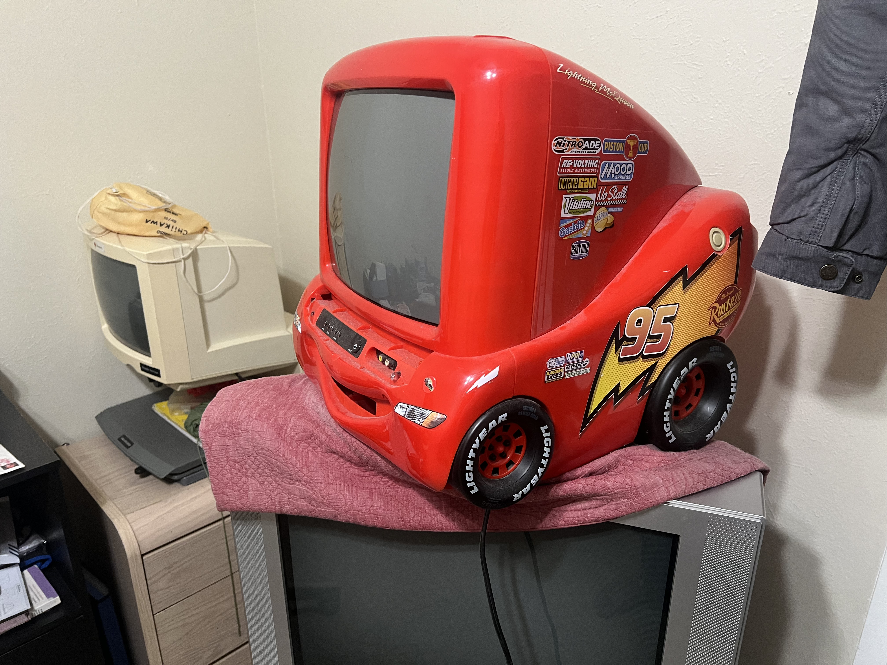

CS 371p Fall 2026: Rahul Myana : Blog 4

Blog Entry no°4
What’s up 👋
The Problem from this week was something that I found interesting. I used to do somewhat competitive programming in highschool but it’s been a while, so I feel like I lost that “mind muscle” connection of solving these kind of problems. So, these weekly problems have been very good for me to regain that skill and I have been realizing that usefulness of having that kind of problem solving strategy for everyday life.
I think that important skill is the skill of reducing a problem down to its very core and abstracting the solution. This helps you eliminate useless logic that may be systematically correct, but not needed for the problem at hand. I feel like in this week’s 3-puzzle problem, it is very easy for my CS-oriented mind to default to a BFS sort of search of all board states until we find the target. But, I felt very lazy to code a solution of that caliber and thought it would be too long winded for a competitive programming type question. The restricted board size gave me a clue, and after trying out some random board states on a piece of paper, it was clear that not all board states are solvable. You can only apply a few legal transformations which essentially meant moving a tile to its target position takes the manhattan distance number of steps between the two points. It was quick to code up and it worked. Yes, if you were to extrapolate it onto a bigger board or would need to weed out unsolvable boards, this solution wouldn’t work at all. But it solves the problem at hand perfectly, so I think that’s a good lesson.
I found this week’s paper interesting as well but I do not agree with some of it’s extreme measures. I felt the same with last week’s CI paper. I mostly like the medium version of these practices.
I didn’t consume a lot of tech related stuff this week, so my pick-of-the-week is my lightning mcqueen CRT (kachow) I got over the break. Except it didn’t came with an remote, there’s no manual input and I can’t find a working universal remote code :/
